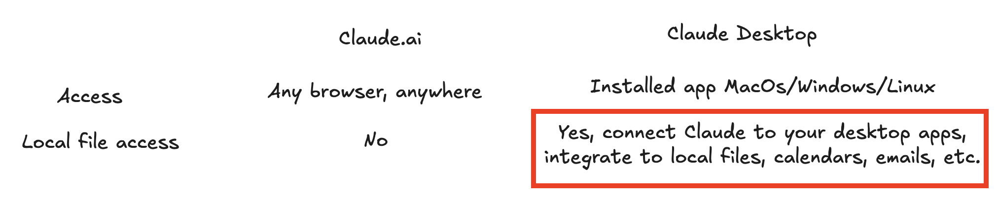
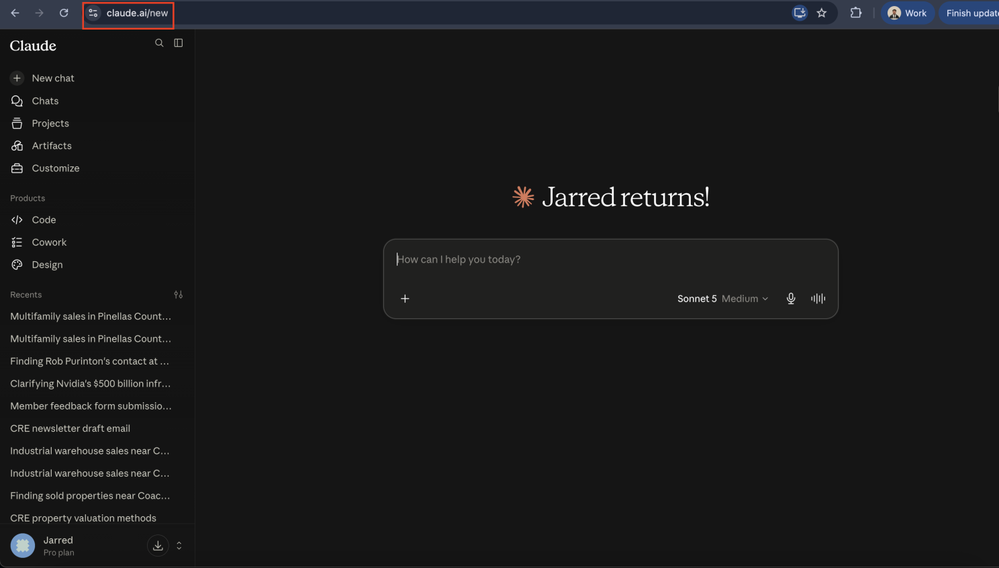
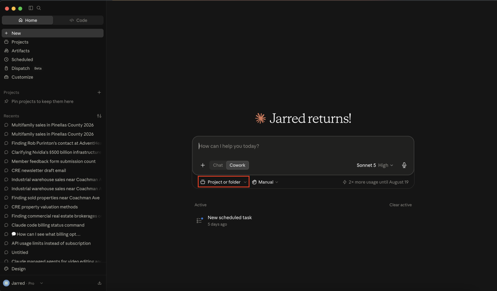
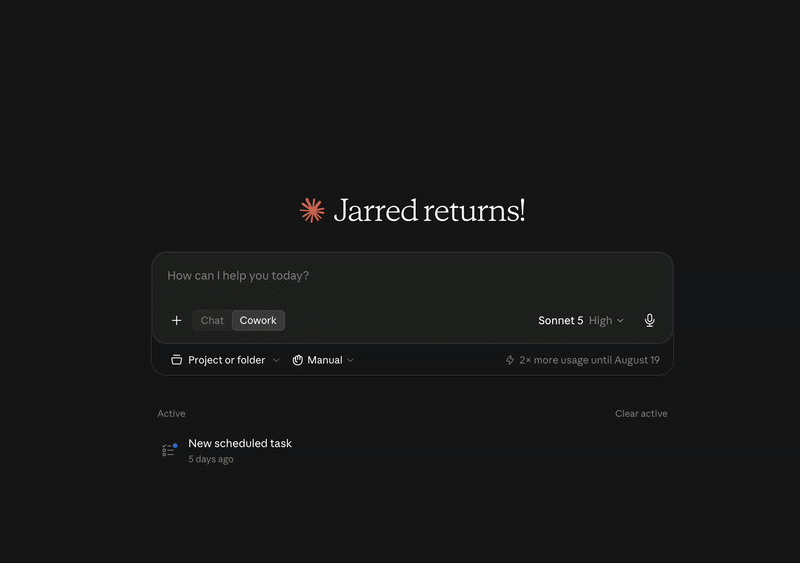
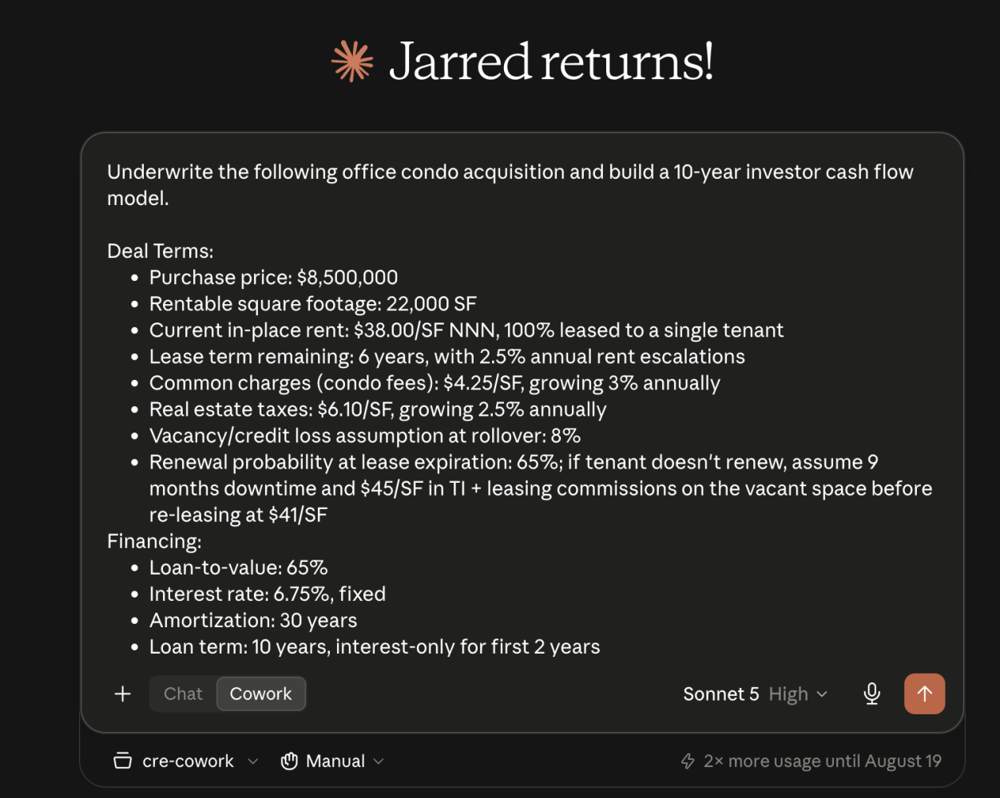
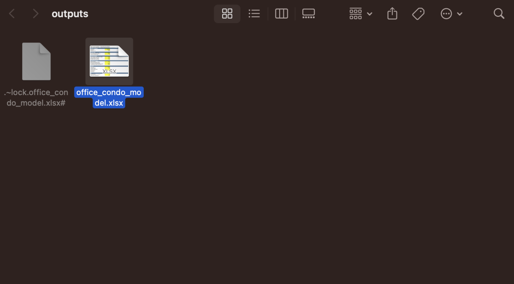

Claude Cowork lets Claude work in a folder on your computer, so an underwriting model is built and revised in the same Excel file instead of uploaded and downloaded each round. It needs a paid plan and the Claude Desktop app for macOS or Windows, open and connected. Since September 16, 2026, Cowork has been merging into everyday Claude.
The AI in Real Estate Field Guide puts four applied CRE workflows, an eight-question readiness scorecard and a 30-day pilot plan in one 18-page PDF.
Why does underwriting in a chat window take so many steps?
Because the file leaves your computer every round. Upload the OM, prompt, download the spreadsheet, open Excel, find a problem, upload again. The team carries the work between two places, and every download is a new copy that nobody is sure is current.

With Cowork in the desktop app, Claude can read and write files in a folder you grant it. The model is created where your team will open it, and the next revision edits that same file. For the general explainer, outside CRE, see what Claude Cowork is.
What changed in September 2026?
Cowork left research preview and became generally available on all paid plans on macOS and Windows on April 9, 2026. On September 16, 2026, Anthropic announced that Cowork and chat are becoming one Claude: you ask for what you need and Claude decides whether it is a quick answer or a task. That is rolling out to Pro and Max first, with Team and Free plans to follow; Enterprise admins get at least 30 days' notice.
What it means for this workflow:
- If your app still shows separate Chat and Cowork options, as in the screenshots below, choose Cowork. If it does not, you have the merged version; just ask.
- Tasks now run on Anthropic's servers, in beta, but reaching files on your computer still needs the Claude Desktop app for macOS or Windows open and connected (Anthropic help).
- Existing projects, connectors and Skills carry over. The pattern in this article does not change: one connected folder per deal, one reviewer, one authoritative file.
How do you set up Cowork for one deal?
- Install Claude Desktop on macOS or Windows and sign in on a paid plan.
- Make one folder per deal with four subfolders:
sourcefor the OM and rent roll,templatefor your approved model,workingandfinal. - Start a Cowork task and connect that folder only. Claude can read and write only in folders you have connected, so connect the deal folder, not Documents or the shared drive.
- Keep manual approval on. Cowork offers three modes: Manual, which asks before each action; Auto, where Claude reviews actions for safety; and Skip all approvals. Start with Manual until you have watched it work on a real deal. Claude always asks before permanently deleting a file.
- Ask for the model, open it in Excel, and ask for revisions to the same file.


Example: an office-condo model built in place
We created a project called cre-cowork and gave it the OM and a template.

Then the underwriting request, run against the files inside the project:

The model was saved to the project's outputs folder and stayed available for the next round of edits.

A request that holds up better on real deals:
Using the OM in /source and our template in /template,
build the ten-year cash flow in /working/[deal]-uw.xlsx.
Keep our tab order. Keep formulas live, not pasted values.
List every assumption the OM does not state on an "Open questions" tab,
and stop for my answers before you calculate returns.
Do not edit anything in /source or /template.Pair it with the underwriting Skill from Part 1 and you no longer need to type the method at all.
What should you check before trusting the file?
- Every input traces to a page of the OM or to an assumption someone confirmed.
- Formulas are live. A hard-coded number where a formula belongs is the most common silent error.
- The open-questions tab is empty, or every item on it has an owner.
- The file name says which version it is, and one person decides when it moves to
final.
Two ways this goes wrong: granting a whole drive, so Claude edits a file you did not mean to share, and switching off approvals on a folder other people also use.
How does Cowork fit with the rest of the series?
Skills hold the method. Connectors reach live systems such as your CRM and Yardi. Cowork is where the file work happens. Scheduled tasks, Part 4, run a job on a cadence while nobody is at the keyboard.
Common questions
Which Claude plans include Cowork?
As of September 2026, Cowork is on paid plans: Pro, Max, Team and Enterprise. It became generally available in the Claude Desktop app on macOS and Windows on April 9, 2026. Working on local files needs the desktop app open and connected.
Is Claude Cowork going away?
No, it is being folded in. On September 16, 2026 Anthropic began merging Cowork and chat into one Claude, starting with Pro and Max plans. Claude decides whether a request is a quick answer or a task, and existing projects, connectors and Skills carry over.
Can Cowork edit Excel underwriting models directly?
Yes. Cowork can create and edit files, including Excel workbooks with live formulas, inside a folder you grant it. Tell it not to touch your template, and have an analyst check formulas and assumptions before the file is treated as final.
Is it safe to give Cowork access to deal files?
Scope it. Grant one deal folder rather than your whole drive, keep manual approval on while you learn how it behaves, and keep licensed data such as CoStar exports out of the folder. A named person should own every file Cowork produces.
The real upgrade is not a better answer. It is a model that keeps working on the same approved files your team will actually use.
Continue with the commercial real estate AI workflow hub, or read the original version in the altr'd newsletter on LinkedIn.